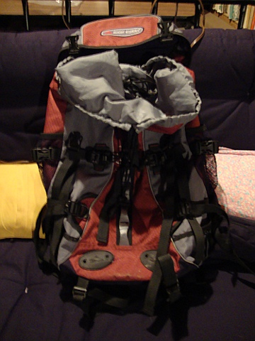
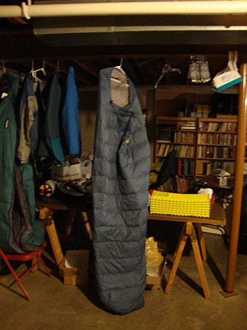
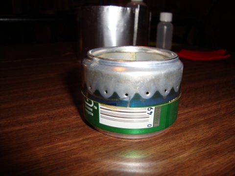
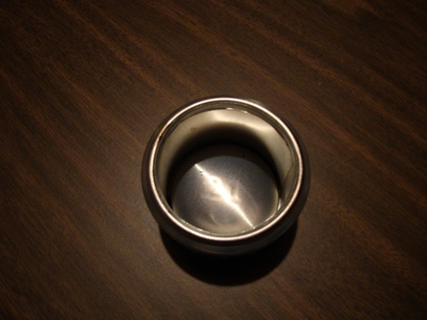
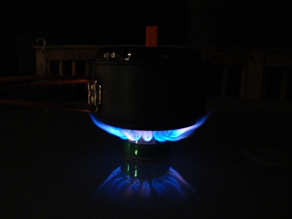
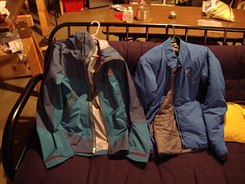
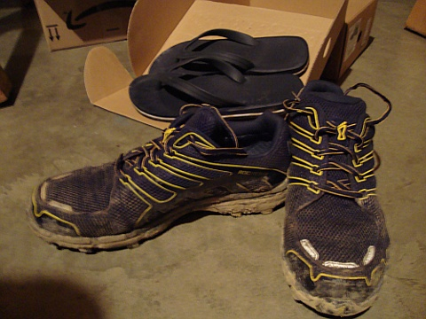
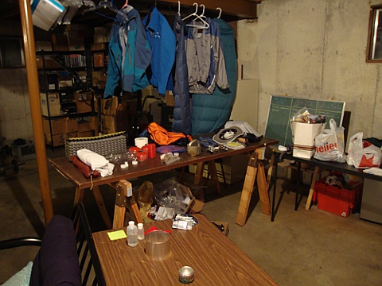
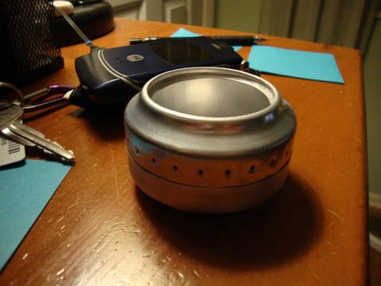

Posts
Trip planning for the 100 mile wilderness
[Category: 100 Mile Wilderness] [link] [Date: 2010-06-07 23:28:35]
Introduction
Over three months ago I cooked up the idea of hiking a remote part of the Appalachian Trail in Maine known as the 100 mile wilderness. While it's crossed by logging roads often there is very little human activity along most of the trail and the conditions vary from low-lying bogs to treeless mountain tops. I'm lucky enough to have a friend crazy enough to try this with me and we've been franticly preparing for our hike the past few months. Planning a weekend trip is a world different than planning a trip that could potentially last up to ten days and the amount of time and effort I have put into preparing has been more than I had anticipated. I'm operating on the assumption that proper planning prevents poor performance. Now, after over three months of thought, dozens of spreadsheets, numerous trip planning meetings, and multiple preparation hikes to test gear, we're enjoying the last days before we depart.
Our plan is to leave between three and four in the morning on Monday the 13th and begin driving northeast to Connecticut where we will stay for a night with another friends parents for a final night of creature comforts including a full meal, cotton sheets, and a shower. We will then make our way to Monson, ME to scope out where we'll enter the trail and to spend some time at an infamous hiker lodge run by the Shaw's. Through my research I have found that a stop at Shaw's provides a good meal and allows for hikers to make contact with some friendly locals who are willing to shuttle hikers that have met with difficulty in the wilderness back to town. That is, of course, assuming that you can get near enough to a logging road and are able to make contact with them using your phone in a region with almost no cellular access.
From there we will make our way to the north end of the wilderness towards Baxter State Park where we intend to end our hike. I arranged for a small seaplane flight from the north end of the trail to Monson which should be a very rewarding way to start our hike. The catch is that we'll have to find somewhere to sleep that night and get up bright and early to catch our flight. This way, we'll end our hike where the car is parked which will undoubtedly be a sight for sore eyes after over 100 miles of hiking.
We're expecting both a nightmare and a dream from the experience. Nightmares that I envision are endless bogs and stream fords that soak us to our very core, clouds of mosquitoes and black flies that engulf us as we traverse moist wooded lowlands, and torrential downpours sapping our spirit throughout the day. Part of preparing yourself mentally, I believe, is knowing that things aren't going to be as picturesque as you wish they would be. Beyond the hardships, I expect to meet interesting people, to see landscapes that I have not had the opportunity to see before, to push my own personal limits both mentally and physically, and to enjoy the disconnection from what's considered civilized and safe. The opportunity to leave behind a large city like Cincinnati, the daily grind of work, and the noise and light pollution that accompany living in a densely populated area have motivated me to pursue backpacking in the past four years.
The reality is that neither of us have ever undertaken a hike of this distance or difficulty. Despite moments of us stopping to think that we've gone mad, something has pushed us to continue and we've now passed the point of no return. All that can be done now is to keep preparing and to anticipate the opportunity to experience something that few people ever pursue.
Logistics and Gear
Choosing gear for a trip that lasts over a week is difficult. My goal was to focus on a lightweight pack that allowed for me to carry adequate amounts of consumables. I know from personal experience that a pack that weighs 55lbs is simply too much for my body to carry. My initial goal was to reduce my pack weight to below 45lbs to start. While I will likely miss this mark by 4-5lbs, it will only take a few days of eating before I am at my target weight. I could also potentially carry a bit less water to drop a few pounds and it looks like I may drop a few items of clothing that will probably be unnecessary. Most of my gear at this point is at the point where it is not negotiable. I'll start with the master gear list itself along with the clothes list.
Master List
| Short Description | Manufacturer | Product Name | Weight (oz) | Total (lbs) | Total base (lbs) |
| Backpack | High Sierra | trek 45 | 48 | 48.68 | 11.07 |
| Cotton Liner | 10.5 | ||||
| Sleeping bag | Lafuma | Warm n' Light 600 | 24 | ||
| Sleeping pad | Thermarest | Z-lite | 14 | ||
| Tent | MSR | Hubba HP | 41 | ||
| Clothes | 95.83 | ||||
| Water purification | MSR | Sweetwater system | 16 | ||
| Water container | MSR | Platypus 2L | 1.3 | ||
| Water container | MSR | Platypus 1L | 1.3 | ||
| Water container | Aquafina | 1L | 1.45 | ||
| Water | 3L | 106 | |||
| Camera | Sony | 5.5 | |||
| Notebook and pencil | rite in the rain | mini | 1 | ||
| Voice recorder | Sandisk | 1.5 | |||
| Cell phone | Motorola | Razr | 4 | ||
| Compass | 0.3 | ||||
| Extra light | Fenix | CREE LED | 1 | ||
| Headlamp | Petzl | Tikka Plus 2 | 3.2 | ||
| Flash stick | Light my fire | Firesteel | 1.8 | ||
| Camp towel | MSR | Camp Towel M | 1 | ||
| Toilet paper | 7 | ||||
| Knife | Fallkniven | Mod F1 | 6 | ||
| Maps and guide | |||||
| First aid kit | 2 | ||||
| Fishing stuff | 1 | ||||
| Mosquito head net | 1 | ||||
| Hygiene | Purell, gold bond, bawdy wash | 7 | |||
| Fire starting kit | 2 | ||||
| Drybag | SealLine | Storm sack 2.5L | 1.6 | ||
| Drybag | SealLine | Storm sack 5L | 2.2 | ||
| Drybag | SealLine | Storm sack 5L | 2.2 | ||
| Drybag | SealLine | Storm sack 10L | 2.7 | ||
| Drybag+Compression | Sea to Summit | Event XS | 3.7 | ||
| Food | 320 | ||||
| Cooking pot | MSR | Titan kettle | 4.2 | ||
| Utensil | Lexan spoon | 0.2 | |||
| Cup | Fozzils | Cup | 1.1 | ||
| Bowl | Fozzils | Bowl | 1.3 | ||
| Stove | MSR | Pocket rocket | 3 | ||
| Fuel | MSR | Isopro | 32 |
Clothes
| Short Description | Manufacturer | Product Name | Weight | Total |
| Warmth | Arc'teryx | Atom LT | 11.5 | 95.83 |
| Rain | Whitaker Mountaineering | Rainier storm shell | 16.58 | |
| Socks | Smartwool | 5.25 | ||
| Under armor | ^ | |||
| Reebok | ^ | |||
| Cotton | 1.5 | |||
| Underwear | Cotton | 9.75 | ||
| Under armor | ^ | |||
| Under armor mesh | ^ | |||
| Pants | Columbia | Titanium w/ belt | 12.5 | |
| Columbia | Generic | 9 | ||
| Base layer | Eddie Bauer | 8 | ||
| Shirts | Columbia | 7 | ||
| Synthetic T | 5 | |||
| Bandana | 1.75 | |||
| Warm cap | 1 | |||
| Brimmed cap | 3 | |||
| Sandals | 4 |
Backpack
After the test trips where I more than comfortably fit a majority of my gear into a High Sierra Trek 45+ I decided to make the ambitious attempt to use this 45L pack for the trip. This pack is 20L smaller than the original pack that I intended to use but I am now hellbent on not carrying the extra 4lbs associated with the 65L pack.

Sleeping
While many would disagree with my choice of a relatively heavy cotton liner, I found that it made sleep much more enjoyable in very humid conditions whereas the Sea to Summit silk liner I own still became quite sticky after relatively limited exposure to humidity. This, coupled with a very light Lafuma Warm n' Light 600 stuffed in a dry sack, has been a very comfortable sleeping arrangement even in horrendously humid conditions (which I expect loads of on the hike). The Thermarest Z-lite will be attached to the bottom of my pack and is definitely favored over my Thermarest ProLite 3 since warmth during June will not be much of an issue and it is simply much more convenient to fold up your sleeping mat in the morning rather than spend 10 minutes fighting it into a stuff sack.

Tent
I delayed for over a month and fought between a purchase of a Six Moons Lunar Solo and the Hubba HP. I gave in and purchased the Hubba HP due to my fear of experiencing some very rough weather conditions. I deemed having the extra protection of the HP worth the extra 9oz in weight. The major downside to the HP, I have found, is that it can be very, very warm. It was nearly uncomfortably warm this past weekend when I tested it out on the Sheltowee Trace and I would have slept outside of it if it wasn't for the mosquitoes. I expect this to be much less of a problem as we travel further north where the nights should get cooler than the 80F I experienced in Kentucky.
Water
Many hikers choose to use tablets to purify their water for the weight savings, but I tend to be quite picky with my water and I also desire to minimize my chance of contracting any waterborne illness by any means necessary. For me, this meant carrying the entire pound of weight of the MSR SweetWater purification system which utilizes both a carbon filter and a solution (active ingredient of sodium hychlorite commonly known as bleach) to provide nearly bombproof protection against waterborne pathogens. For me, this system is tried and true and the water it generates is wonderful tasting and, more importantly, safe. To carry water I will be using two 1L wide mouth Aquafina bottles and both a 1L and 2L PlatyBag. The Aquafina bottles provide a comfortable way to consume water while the PlatyBags allow for the transport of up to 5L of water for times when we may be going into areas that will not have a water source for a day. The main advantage of this system is that, if necessary, I can save a lot of pack space by not filling either of the PlatyBags and folding them up. They really are great for lightweight backpacking. I intend to drink 1L of Gatorade a day and to use one of my Aquafina bottles to mix it each morning. For me, the extra calories and carbohydrates is worth the weight of carrying the powder mix.
Storage
Coming to terms with the reality that things are going to be wet has led me to aim for nearly full water protection of most of my equipment. This means that I will have five dry bags in all. Four of these are SealLine Storm Sacks by Cascade Designs while the other is the amazing eVent combination dry bag and compression sack by Sea to Summit. The smallest storm sack is 2.5L and will carry important personal items that can't get wet such as electronics (sandisk voice recorder, cell phone, backup flashlight, etc). The first 5L dry bag will carry my tent while the second will carry the sleeping bag and cotton liner. The 10L storm sack will carry all of my food and garbage and will double up as a bear bag that will be hung from a tree a few hundred yards from camp each night. The eVent combination dry bag and compression sack is reserved for making my clothing fit down into an insanely small space. The maximum capacity of this amazing compression sack is 6L and it's minimum volume is 2L. I was able to fit all of my clothing into a 2L space except for my Arc'Teryx Atom LT which should add less than one liter to the total volume.
Cooking
Boiling water will be done in an MSR Titan Kettle which I have come to love over the past few months. The only utensil I plan to use is a partially sawed off lexan spoon (so it fits in the Titan Kettle). For some extra eating comfort I will be bringing a Fozzils cup and bowl which are amazingly light folding dishes. I'm currently torn between using the MSR Pocket Rocket or one of my homemade alcohol stoves. I had posted an update previously outlining my creation of an alcohol stove from 12oz soda cans but I have since improved the design and started using newly released 7.5oz cans found at the local Kmart. The result is a smaller stove that primes faster and consumes less fuel. I have two pounds of MSR IsoPro fuel that needs to be burned someday and I had planned to use it on this trip. Unfortunately, I have since come to be very comfortable with my alcohol stove and almost feel safer using it at this point. I'll decide by the time I leave. The weight difference of either is almost negligible, though the alcohol stove would likely shave off 5-6oz. My strategy is to cook mostly in the freezer bags that I will be using to store a single days food in to minimize the time spent cleaning dishes.



Clothing and Footwear
Wearing everyday clothing on a hike is a recipe for suffering, I've found. I did it for years and having experienced hiking with proper clothing has changed my outlook on hiking. The reality is that good clothing and gear costs money and you truly do get what you pay for. For warmth I will be bringing my Arc'teryx Atom LT which weights a mere 11.50oz. My protection from the elements will be a Whitaker Mountaineering Rainier Storm Shell which weights 16.58oz. Most of my friends swear by Smartwool socks, but I had a less than desirable experience with them in Colorado and Utah last summer. I will be bringing a pair of cotton socks for comfort, a pair of Under Armor athletic socks, a pair of Reebok athletic socks, and one pair of Smartwools. During the day, I will be wearing one of two pairs of Under Armor quick drying synthetic underwear which I have found to eliminate chafing. I also will be sleeping in one pair of loose cotton boxers which will give me some highly desired freedom in the evenings. I have two pairs of convertible synthetic pants which are nearly identical, both by Columbia Sportswear. The only long-sleeve shirt I intend to bring is an Eddie Bauer base layer I snagged for $15. I have a long-sleeve Columbia ventilator shirt for extremely buggy areas where I need full body protection but I intend to spend as much time as possible in a simple Under Armor running shirt which is fast-drying and well-ventilated. On top of that I intend to bring a bandana, a lightweight warm cap, and an Outdoor Designs brimmed cap for the times when I need to use my no-see-um head net.

It is without doubt that I will be wearing my Inov-8 roclite 312 GTX's for this trip. I've tried them twice and they have been nothing short of amazing. I am one of the few hikers that never found love for a strong pair of leather boots and have always felt more comfortable in running shoes or skate shoes. The feel of the trail runners combined with their protective Goretex waterproof layer makes walking through puddles no worry. The big problem is fording across swollen streams, and for that I intend to attempt to do it wearing nothing more than a simple $3 pair of foam sandals. They are essentially weightless and can be clipped to the back of my backpack. I have received mixed reports on the condition of streams but I expect that crossing some of them in plain sandals may prove difficult due to their rocky beds. I managed to ford two streams in them that were up to knee depth on my test trip last weekend and decided to rely on them after that success.

Everything Else
In the realm of electronics I will have a Sony 12.1MP digital camera, a 1GB Sandisk voice recorder, a Motorola Razr cell phone, a Fenix CREE LED light (up to 85 lumens), and a Petzl Tikka Plus 2 headlamp (up to 50 lumens). I will be bringing a basic compass along with the guide book and maps for the section of trail we will be hiking. I expect to know these maps intimately by the end of the trail and have studied them thoroughly already while route planning. Other basics include an MSR camp towel, toilet paper, a no-see-um head net and a personal hygiene kit containing purell, gold bond, all-purpose body wash, and a limited supply of toothpaste. More important items include a fire flash, a fire starting kit for emergency fire starting that contains matches and some oil-infused sticks that will catch fire easily, a tiny fishing kit, and a Fallkniven Mod F1 knife. My first aid kit is home-made and has a variety of things such as gauze, tape, sting pads, antiseptic cleansing wipes, tweezers (for any thorns or ticks that may find their way into my legs or arms), and burn cream.
Food
I am waiting until the last moment to pack up and weigh all of my food for the trip. Since neither of us have access to a dehydrator we're left to improvise with the cheapest options we can find at the local grocery. At a young age I developed an affinity to macaroni and cheese and have decided to base most of my dinners around either dual servings of easy mac, a home-made potato cheddar soup with veggies and noodles, or ramen noodles. Accompanying each dinner will be a serving of dried fruit along with a few other goodies that will vary by day to give me some variety and something to look forward to. Breakfasts will consist largely of high fiber oatmeal and pop tarts along with servings of Sun Maid Tropical Trio mix (pineapple, papaya, mango) which I have found to be a good energy boost in the morning. Throughout the day I intend to constantly snack to maintain energy. I will be consuming primarily energy bars (Clif bars, Powerbars), a good old raisins and peanuts (GORP) mix, Sezme snaps, and homemade logan bread.
I may post a more exact list of what I intend to consume each day closer to departure.
Final Thoughts
I'm hoping to shave my weight down to under 45lbs after I ditch a few clothing items and see what my true food weight will be. In the spreadsheet I just approximated my consumption at 2lbs a day for a total of 20lbs. I expect it to be closer to 16-18lbs.
There's no way to tell what is going to happen, but I feel that I have put forth an awful lot of effort in preparing for this hike. It has occupied a lot of my time in the past three months and there is little more to do now than to go out and walk into the forests of Maine. Being able to clean up the corner of the basement I have taken over will be a humbling moment. Hopefully I will be able to make a lot of interesting posts in a few weeks accompanied with pictures and videos.

Up until now, I was quite confident that my MSR Pocket Rocket was the ultimate solution for cooking during a backpacking trip. After having witnessed a variety of alcohol stoves being used in the field and now creating my own I am fully convinced otherwise. The reasons are numerous.
- Lightweight
- Fuel
- Cost
- Environmentally friendly
Alcohol stoves can weigh less than an ounce for smaller designs. It's almost impossible to come up with a solution that is lighter than a simple alcohol stove. They burn fuel that is readily available at most liquor stores and hardware stores. If you are pinched for cash, denatured alcohol is clean-burning and can cost less than $5 a quart. Building an alcohol stove only takes time and very little money since they can be built out of recyclable aluminum cans. If the stove is damaged or lost it is no big deal -- it didn't cost you anything! Most importantly, alcohol stoves are environmentally friendly in a variety of ways. They are quiet and they burn fuel that is renewable, safe, and odorless. If the fuel is spilled (be it in your pack or outside of it) it evaporates quickly and is odorless unlike many gases which are used in camping stoves. For more reasons why alcohol stoves rock, visit zenstoves.net.
Without doubt it wasn't painfully easy to build the stove. I actually failed multiple times before creating a stove that was worthy of field use. I recommend building a simple stove to begin with. Learning to work with the aluminum cans was the biggest challenge. Having the correct tools also helped. I managed to get through the process without cutting myself which I consider a victory in its own.
For any would-be stove builders I will offer the following advice: (1) Don't expect to be successful on your first stove. Try to build a simple design and focus on learning how to work with the aluminum can and how to use the tools you have to your advantage. (2) Design a safe and accurate way to cut the aluminum cans. I set up a board with a fastening device that would adjust to hold a razor at a given height (say 20mm or 30mm). (3) Invest in some high temperature adhesive for when you make your first good stove. I recommend JB Weld. (4) Having some wet-or-dry fine grit sandpaper around to really shine up the stove and round the edges makes a much more aesthetically pleasing final product.

The last thing I will say is that zenstoves has been an indispensable resource for me. I recommend that as the starting point for anyone looking into alcohol stove building.
In the past, sound problems involving ALSA or OSS were highly prolific on Linux help forums. The sound system simply did not work well enough out of the box for quite a long time. Now, with the advent of dmix in ALSA and the proliferation of sound servers like PulseAudio, sound seems to be pretty well worked out. Unfortunately, I can't say the same about suspend and resume.
Having a laptop that will not suspend to memory is nearly as inhibiting as having one with no battery. The reality is that, yes, my Vostro 1000 is getting pretty old. You would think that after numerous kernel, driver, and HAL/DeviceKit releases that a three to four year old laptop would exhibit a very high degree of compatibility. While this is the case for most parts of the Linux kernel, video drivers and the ability to suspend have always been unstable and unpredictable. I don't think I have ever upgraded a release of Ubuntu or Fedora without something on this laptop ceasing to work properly.
The first issue is that I have to use versions of the ati/radeon xorg video modules from Ubuntu 9.04 (Jaunty) since the newer ones available in Karmic simply will not allow me to wake up from a suspend to memory. All it presents the user with is a black screen of death. The second issue is the seemingly amazing ability of suspend to bounce back and forth from functioning perfectly to poorly with every kernel release. I'm not going to go into any details here, but I will say that I think focusing some development time on improving the suspend and resume experience on laptops and netbooks could go a long way in avoiding the loss of adventurous new users trying Linux for the first time.
I should also note that I have been unable to use the binary AMD-provided fglrx module since Ubuntu 8.10 since they stopped supporting the Radeon XPress in my laptop. I'd have to say that Intrepid was probably the most compatible release of Ubuntu for this particular laptop when taking everything into account. After forcing an install of the older video drivers from Jaunty suspend and resume appears to work reliably. This all comes after placing a new 32GB SSD drive and $30 battery into the aging laptop and it feels like it has some life in it again!